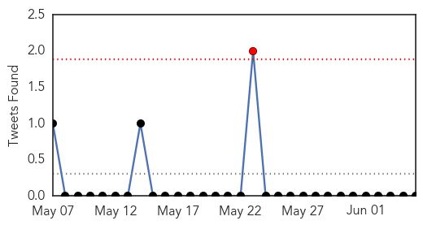

30 Day Trends
Web: 0 alerts, 0 warnings
Twitter: 1 alerts, 0 warnings
Top Articles:
- 1.000
- A Scary New Disease Just Got Scarier
- 0.999
- SCH issues guidelines for Qatar pilgrims
- 0.999
- MERS Case Count Jumps in Saudi Arabia
- 0.999
- Saudi Arabia revises MERS infection numbers upward; 688 infections and 282 deaths confirmed
- 0.998
- Saudi MERS data review shows big jump in number of deaths
- 0.997
- Study Confirms MERS Spreads from Camels to People
- 0.997
- Saudi Study Strengthens Case Against Camels In MERS Outbreak
- 0.996
- As MERS cases keep coming, Saudis to test camels
- 0.994
- Four more MERS cases confirmed in Saudi Arabia
- 0.993
- Saudi Arabia To Test Camels And Livestock For MERS
- 0.985
- Fakeih: 80% drop in MERS infections
- 0.957
- 80% drop in coronavirus cases in six weeks, says FakeihHealthcare
- 0.954
- Medical journal links Mers to camels, bats
- 0.953
- the edge of knowledge
- 0.948
- Mers not an issue for Saudi’s USD16bn religious tourism industryTravel & Tourism
- 0.943
- Mers, Sars victims of “bad journalism”
- 0.940
- Camel snot blamed for MERS virus
- 0.870
- Saudi Arabia taking measures for pilgrims' safety - Emirates 24
- 0.823
- Medical practitioners form 28pct of MERS cases in Saudi Arabia - minister
- 0.567
- USDA Announces Funding, Issues Federal Order to Combat PEDv
Top Tweets:
-
No tweets found for Jun 05, 2014
Web/News Articles

Tweets
Article Locations

Article Confidences